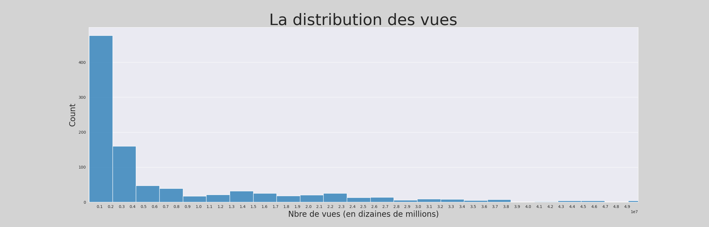
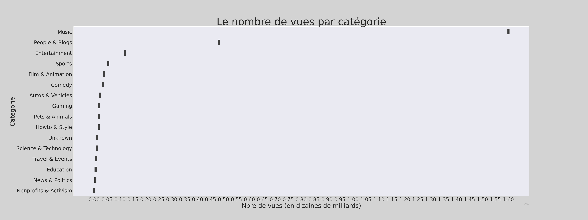

La distribution des vues
Chacun d'entre nous à déja eu à parler d'une vidéo Youtube et d'affirmer qu'elle est très populaire. Mais à quelle condition une vidéo Youtube peut-elle être considérée de populaire.
Ici, nous voyons bien que les vidéos Youtube les plus populaires atteignent facilement le million de vues, mais peu d'entre elles arrivent à le dépasser. En général, une vidéo Youtube serait considéré comme étant populaire si elle arrive à atteindre ce million de vues dans un laps de temps plus ou moins court. Plus vite, elle dépasse cette limite plus, elle monte en popularité.
Les vidéos les plus populaires
Maintenant que nous en savons plus sur la condition nécessaire pour considérer une vidéo Youtube de populaire, Quelles sont les vidéos les plus populaires d'après notre analyse ?

La vidéo la plus visionnée avec plus de 6 milliards de vues est le clip musical "See you again" de Wiz Khalifa et Charlie Puth. Puis, loin derrière avec un peu moins de 3 milliards de vues, on retrouve le clip musical de Pedro Capò et Farruko intitulé "Calma". En troisième position, avec 2,2 milliards de vues le clip musical "No me Conoce" de Bad Bunny, J. Balvin et Jhay Cortez. Cependant, est-ce parce que ces vidéos ont obtenu autant de vues que cela signifie qu'elles sont les plus populaires. Regardons ensemble le graphique suivant

Eh Oui, ce graphique est très différent du précédent. Le clip musical "See you again" de Wiz Khalifa et Charlie Puth qui semblait battre tous les records ne figure qu'en 5ᵉ position, Tandis que le clip "Old Town Road" de Lil Nas X qui ne figurait même pas dans la liste des vidéos les plus visionnées se retrouve en tête de ce classement. On voit donc bien que le nombre de vues seul ne suffit pas à rendre une vidéo populaire. Il existe ainsi d'autres facteurs pour déterminer la popularité ou non d'une vidéo Youtube.
Le nombre de vues par catégorie
La catégorie "Music" est en tête de classement avec plus de 16 milliards de vidéos visionnées. Très loin derrière, on retrouve la catégorie "People & Blogs" avec 4,8 milliards de vidéos visionnées et en 3e position la catégorie "Entertainment" avec 1,2 milliard de vidéos visionnées. En gros, la musique est au cœur de la plateforme Youtube.
Quelle relation existe-t-il entre le nombre de vues et le nombre de likes ?
La répartition des points montre bien l'existence d'une relation entre nos deux variables. Plus le nombre de vues d'une vidéo est élevé plus le nombre de likes l'est également. Nous pouvons illustrer cela plus en détaille avec la droite de régression linéaire obtenu à partir de ce nuage de point.
La droite de regression linéaire est strictement croissante et d'après calculs le coéfficent de corrélation valant 0.928 (voir ./notebooks/03_statistics.ipynb) on peut déduire que nos deux variables sont fortement et positivement corrélées.
L'Année d'Or de Youtube
Nous allons pour finir, répondre à la question suivante : En quelle année la plateforme a obtenu le plus de vidéos streamées toutes catégories confondus.

Il s'agit donc de l'année 2024, avec 288 vidéos populaires streamées. On pourrait également déduire que les vidéos les plus récentes sont en effet plus populaires que les vidéos les plus anciennes et cela serait parfaitement logique.